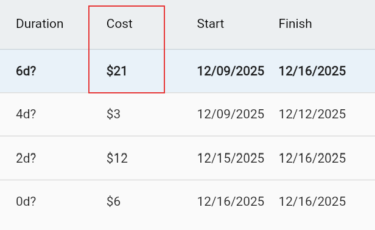
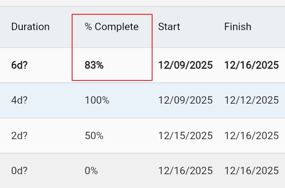

Collaborative MS Project alternative for the Web
Plan, schedule, and track your projects directly within Google Workspace with the help of AI – even in a mobile web browser!
Also works with Google Drive for Gmail users!
Plan, schedule, and track your projects directly within Google Workspace with the help of AI – even in a mobile web browser!
Also works with Google Drive for Gmail users!

Import from MS Project, use AI or your planning skills to get started and create a project plan in an easy-to-use, full-featured tool.
Use Google Drive's or Ingantt's built-in sharing feature to share your project plans with others on Google Drive.
Export your project plan as a Gantt chart or a Microsoft Project file to PNG, PDF or XML format. Ingantt uses the XML format natively.
Go beyond the plain list of tasks and assignments by grouping your tasks and using the Gantt chart.
Anticipate completion dates and identify potential roadblocks early.
Set costs for your resources and tasks and see the total cost of your project.
Adjust project plans on the fly and adapt to changes while keeping everything organized and aligned.
Update your project plan as you go with % complete values for your tasks and see the overall % complete of your project.
Allocate your resources effectively to prevent overburdening your team and avoid resource conflicts during project execution.
Identify potential project risks and implement contingency plans to minimize the impact on your project goals.
Get started planning with Ingantt
Have more questions? Contact a real person for support!